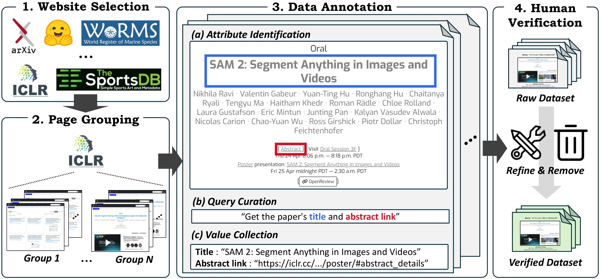
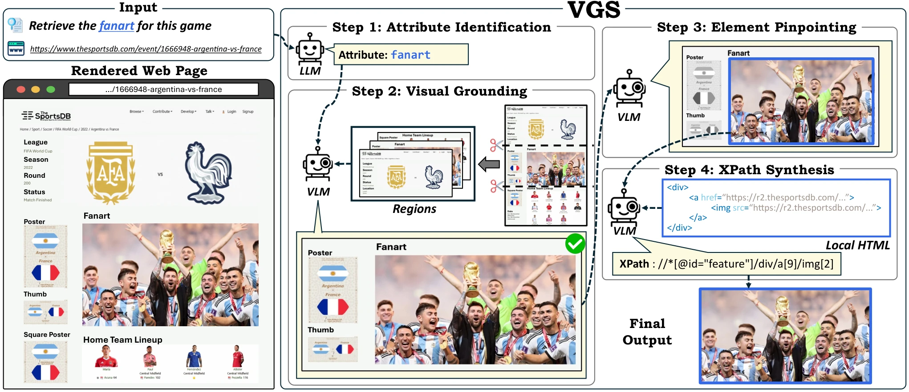

Abstract
Web information extraction (WIE) is the task of automatically extracting data from web pages, offering high utility for various applications. The evaluation of WIE systems has traditionally relied on benchmarks built from HTML snapshots captured at a single point in time. However, this offline evaluation paradigm fails to account for the temporally evolving nature of the web; consequently, performance on these static benchmarks often fails to generalize to dynamic real-world scenarios. To bridge this gap, we introduce \dataset, a new benchmark designed for evaluating WIE systems directly against live websites. Based on trusted and permission-granted websites, we curate natural language queries that require information extraction of various data categories, such as text, images, and hyperlinks. We further design these queries to represent four levels of complexity, based on the number and cardinality of attributes to be extracted, enabling a granular assessment of WIE systems. In addition, we propose Visual Grounding Scraper (VGS), a novel multi-stage agentic framework that mimics human cognitive processes by visually narrowing down web page content to extract desired information. Extensive experiments across diverse backbone models demonstrate the effectiveness and robustness of VGS. We believe that this study lays the foundation for developing practical and robust WIE systems.
LiveWeb-IE
Web information extraction (WIE) benchmarks are built from HTML snapshots captured at one point in time, while real websites keep changing their layout and DOM. LiveWeb-IE evaluates WIE systems directly on live websites.

- 342 queries over 15 permission-granted websites in 8 domains, organized into 46 page groups with distinct layouts, covering 97 unique attributes.
- Queries target text, images and hyperlinks.
- Four task types by the number of attributes and the cardinality of their values: Type I (one attribute, single value), Type II (several attributes, single values), Type III (one attribute, a list of values), Type IV (several attributes, lists of values).
VGS: Visual Grounding Scraper
Instead of reading the full HTML, VGS first looks at the rendered page and then reads only the HTML that matters.

- Attribute identification. An LLM maps the query to the target attributes.
- Visual grounding. The page is rendered as screenshot regions, and a VLM selects the region that contains each attribute.
- Element pinpointing. Candidate elements in that region are marked with numbered boxes (Set-of-Mark), and the VLM selects the target elements.
- XPath synthesis. An XPath is written from the local HTML of the selected elements and reused on pages of the same group.
Results
| Backbone | CoT | Reflexion | AutoScraper | VGS (ours) |
|---|---|---|---|---|
| Gemini-2.5-Flash | 20.53 | 22.39 | 22.02 | 43.44 |
| GPT-4o-mini | 20.63 | 17.47 | 21.85 | 35.85 |
| GPT-4o | 24.60 | 24.22 | 26.76 | 48.58 |
| Gemma-3-4B | 5.98 | 10.35 | 11.57 | 16.30 |
| Gemma-3-27B | 16.65 | 17.47 | 19.04 | 30.79 |
| Qwen-2.5-7B | 11.67 | 14.53 | 16.04 | 21.74 |
| Qwen-2.5-32B | 17.74 | 20.28 | 21.61 | 35.05 |
| Qwen-2.5-72B | 22.06 | 18.36 | 23.28 | 38.77 |
Overall F1 (%) on LiveWeb-IE (Table 2 of the paper). Top: proprietary backbones, bottom: open-source. Human experts reach 86.60.
- VGS is the best method on every backbone. With GPT-4o, it exceeds AutoScraper by 36.28 F1 on Type III and 34.58 F1 on Type IV.
- Moving from snapshots to live pages hurts HTML-only methods: on SWDE pages whose values are unchanged online, F1 drops by 13.67 to 17.88 points for the baselines and by 8.15 to 8.63 for VGS (GPT-4o and Qwen-2.5-72B).
- The task is far from solved: the best VGS run is still 38.02 F1 below human experts.
BibTeX
@inproceedings{yang2026livewebie,
title = {LiveWeb-IE: A Benchmark for Online Web Information Extraction},
author = {Yang, Seungbin and Kim, Jihwan and Choi, Jaemin and Kim, Dongjin and Yang, Soyoung and Park, ChaeHun and Choo, Jaegul},
booktitle = {The Fourteenth International Conference on Learning Representations},
year = {2026},
url = {https://openreview.net/forum?id=bIODmQ1TNd}
}